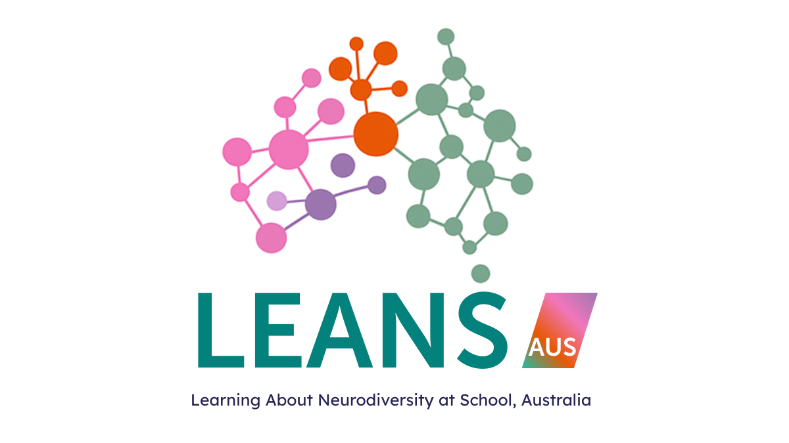

YOUR LEARNING JOURNEY · UNIT 1
Introduction to
neurodiversity
Explore the ideas.
Prepare to bring them to your classroom.
WELCOME
Let’s begin.
Enter the review password to open the educator learning module.
This module does not save your password. Refreshing or selecting “Lock module” closes access. Your learning notes remain on this device.